from sklearn.linear_model import Ridge15 Cross Validation and Regularization
Consider the question: how do we control the complexity of our model? To answer this, we must know precisely when our model begins to overfit. The key to this lies in evaluating the model on unseen data using a process called Cross-Validation. A second point this note will address is how to combat overfitting – namely, through a technique known as regularization.
15.1 Cross Validation
From the last lecture, we learned that increasing model complexity decreased our model’s training error but increased variance. This makes intuitive sense; adding more features causes our model to better fit the given data, but generalize worse to new data. For this reason, a low training error is not representative of our model’s underlying performance – this may be a side effect of overfitting.
Truly, the only way to know when our model overfits is by evaluating it on unseen data. Unfortunately, that means we need to wait for more data. This may be very expensive and time consuming.
How should we proceed? In this section, we will build up a viable solution to this problem.
15.1.1 The Holdout Method
The simplest approach to avoid overfitting is to keep some of our data secret from ourselves. This is known as the holdout method. We will train our models on most of the available data points – known as the training data . We’ll then evaluate the models’ performance on the unseen data points (called the validation set) to measure overfitting.
Imagine the following example where we wish to train a model on 35 data points. We choose the training set to be a random sample of 25 of these points, and the validation set to be the remaining 10 points. Using this data, we train 7 models, each with a higher polynomial degree than the last.
We get the following mean squared error (MSE) on the training data.
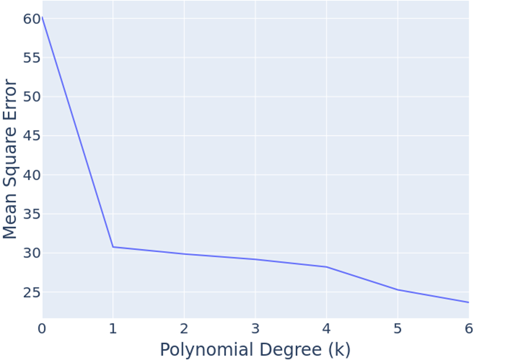
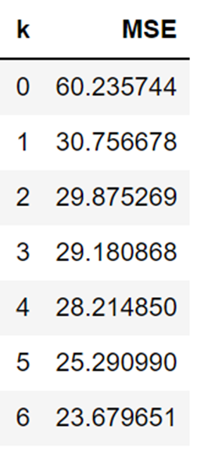
Using these same models, we compute the MSE on our 10 validation points and observe the following.
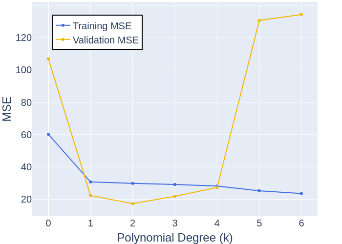
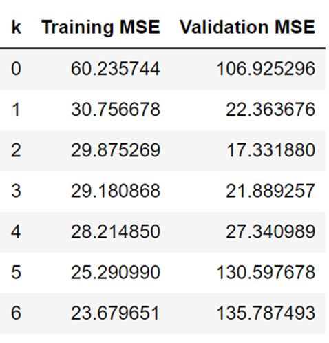
Notice how the training error monotonically decreases as polynomial degree increases. This is consistent with our knowledge. However, validation error first decreases, then increases (from k = 3). These higher degree models are performing worse on unseen data – this indicates they are overfitting. As such, the best choice of polynomial degree in this example is k = 2.
More generally, we can represent this relationship with the following diagram.

Our goal is to train a model with complexity near the red line. Note that this relationship is a simplification of the real-world. But for purposes of Data 100, this is good enough.
15.1.1.1 Hyperparameters
In machine learning, a hyperparameter is a value that controls the learning process. In our example, we built seven models, each of which had a hyperparameter k that controlled the polynomial degree of the model.
To choose between hyperparameters, we use the validation set. This was evident in our example above; we found that k = 2 had the lowest validation error. However, this holdout method is a bit naive. Imagine our random sample of 10 validation points coincidentally favored a higher degree polynomial. This would have led us to incorrectly favor a more complex model. In other words, our small amount of validation data may be different from real-world data.
To minimize this possiblity, we need to evaluate our model on more data. Decreasing the size of the training set is not an option – doing so will worsen our model. How should we proceed?
15.1.2 K-Fold Cross Validation
In the holdout method, we train a model on only the training set, and assess the quality only on the validation set. On the other hand, K-Fold Cross Validation is a technique that determines the quality of a hyperparameter by evaluating a model-hyperparameter combination on k independent “folds” of data, which together make up the entire dataset. This is a more robust alternative to the holdout method. Let’s break down each step.
Note: The k in k-fold cross validation is different from the k polynomial degree discussed in the earlier example.
In the k-fold cross-validation approach, we split our data into k equally sized groups (often called folds). In the example where k = 5:
To determine the “quality” of a particular hyperparameter:
- Pick a fold, which we’ll call the validation fold. Train a model on all other
k-1folds. Compute an error on the validation fold. - Repeat the step above for all
kpossible choices of validation fold, each time training a new model. - Average the
kvalidation fold errors. This will give a single error for the hyperparameter.
For k = 5, we have the following partitions. At each iteration, we train a model on the blue data and validate on the orange data. This gives us a total of 5 errors which we average to obtain a single representative error for the hyperparameter.
Note that the value of the hyperparameter is fixed during this process. By doing so, we can be confident in the hyperparameter’s performance on the entire dataset. To compare multiple choices of a hyperparameter –say m choices of hyperparameter– we run k-fold cross validation m times. The smallest of the m resulting errors corresponds to the best hyperparameter value.
15.1.2.1 Hyperparameter Selection Example
K-fold cross validation can aid in choosing the best hyperparameter values in respect to our model and loss function.
Consider an example where we run k-fold cross validation with k = 3. We are implementing a model that depends on a hyperparameter \(\alpha\), and we are searching for an \(\alpha\) that minimizes our loss function. We have narrowed down our hyperparameters such that \(\alpha = [0.01, 0.1, 1, 10]\).
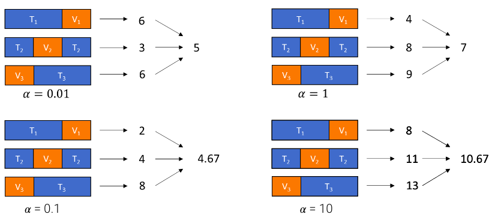
The losses of the model are shown per k fold of training data (arrows are pointing to the loss value) for each value of \(\alpha\). The average loss over the k-fold cross validation is displayed to the right of all the k-fold losses.
To determine the best \(\alpha\) value, we must compare the average loss over the k-folds of training data. \(\alpha = 0.01\) yields us an average loss of \(5\), \(\alpha = 0.1\) yields us an average loss of \(4.67\), \(\alpha = 1\) yields us an average loss of \(7\), and \(\alpha = 10\) yields us an average loss of \(10.67\).
Thus, we would select \(\alpha = 0.1\) as our hyperparameter value as it results in the lowest average loss over the k-folds of training data out of our possible \(\alpha\) values.
15.1.2.2 Picking K
Typical choices of k are 5, 10, and N, where N is the number of data points.
k = N is known as “leave one out cross validation”, and will typically give you the best results.
- In this approach, each validation set is only one point.
- Every point gets a chance to get used as the validation set.
However, k = N is very expensive and requires you to fit a large number of models.
15.1.3 Test Sets
Suppose we’re researchers building a state of the art regression model. We choose a model with the lowest validation error and want to report this out to the world. Unfortunately, our validation error may be biased; that is, not representative of error on real-world data. This is because during our hyperparameter search, we were implicitly “learning” from our validation data by tuning our model to achieve better results. Before reporting our results, we should run our model on a special test set that we’ve never seen or used for any purpose whatsoever.
A test set can be something that we generate ourselves, or it can be a common dataset whose true values are unknown. In the case of the former, we can split our our available data into 3 partitions: the training set, testing set, and validation set. The exact amount of data allocated to each partition varies, but a common split is 80% train, 10% test, 10% validation.
Below is an implementation of extracting a training, testing and validation set using sklearn.train_test_split on a data matrix X and an array of observations y.
X_train_valid, X_test, y_train_valid, y_test = train_test_split(X, y, test_size=0.1)
X_train, X_val, y_train, y_val = train_test_split(X_train_valid, y_train_valid, test_size=0.11)
As a recap:
- Training set used to pick parameters.
- Validation set used to pick hyperparameters (or pick between different models).
- Test set used to provide an unbiased error at the end.
Here is an idealized relationship between training error, test error, and validation error.
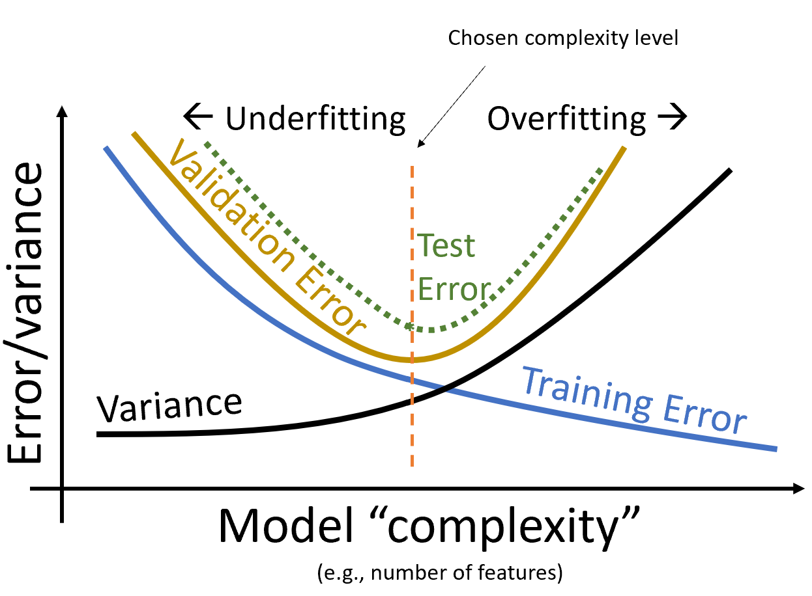
Notice how the test error behaves similarily to the validation error. Both come from data that is unseen during the model training process, so both are fairly good estimates of real-world data. Of the two, the test error is more unbiased for the reasons mentioned above.
As before, the optimal complexity level exists where validation error is minimized. Logically, we can’t design a model that minimizes test error because we don’t use the test set until final evaluation.
15.2 Regularization
Earlier, we found an optimal model complexity by choosing the hyperparameter that minimized validation error. This was the polynomial degree k= 2. Tweaking the “complexity” was simple; it was only a matter of adjusting the polynomial degree.
However, in most machine learning problems, complexity is defined differently. Today, we’ll explore two different definitions of complexity: the squared and absolute magnitude of \(\theta_i\) coefficients.
15.2.0.1 Constraining Gradient Descent
Before we discuss these definitions, let’s first familiarize ourselves with the concept of constrained gradient descent. Imagine we have a two feature model with coeffiecient weights of \(\theta_1\) and \(\theta_2\). Below we’ve plotted a two dimensional contour plot of the OLS loss surface – darker areas indicate regions of lower loss. Gradient descent will find the optimal paramaters during training \((\theta_1, \theta_2) = \hat\theta_{No Reg.}\).

Suppose we arbitrarily decide that gradient descent can never land outside of the green ball.

Gradient descent finds a new solution at \(\hat\theta_{Reg.}\). This is far from the global optimal solution \(\hat\theta_{No Reg.}\) – however, it is the closest point that lives in the green ball. In other words, \(\hat\theta_{Reg.}\) is the constrained optimal solution.
The size of this ball is completely arbitrary. Increasing its size allows for a constrained solution closer to the global optimum, and vice versa.
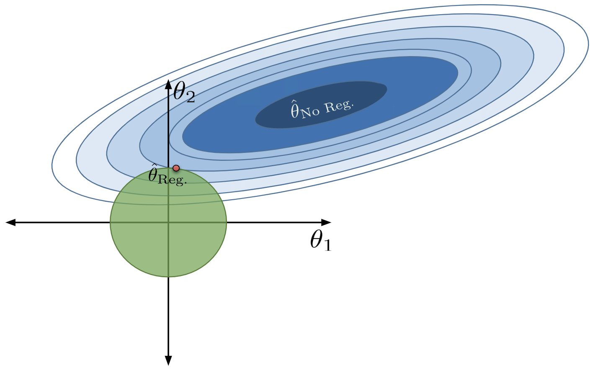
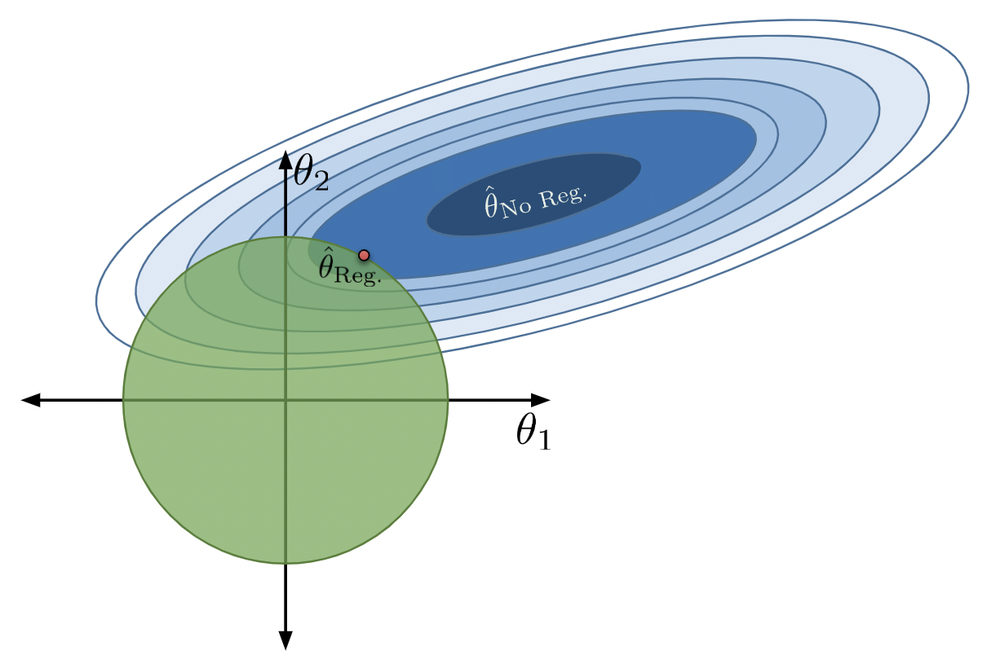
In fact, the size of this ball is inherently linked to model complexity. A smaller ball constrains (\(\theta_1\), \(\theta_2\)) more than a larger ball. This is synonymous with the behavior of a less complex model, which finds a solution farther from the optimum. A larger ball, on the other hand, is synonymous to a more complex model that can achieve a near optimal solution.
Consider the extreme case where the radius is infinitely small. The solution to every constrained modeling problem would lie on the origin, at \((\theta_1, \theta_2) = (0, 0)\). This is equivalent to the constant model we studied – the least complex of all models. In the case where the radius is infinitely large, the optimal constrained solution exists at \(\hat\theta_{No Reg.}\) itself! This is the solution obtained from OLS with no limitations on complexity.
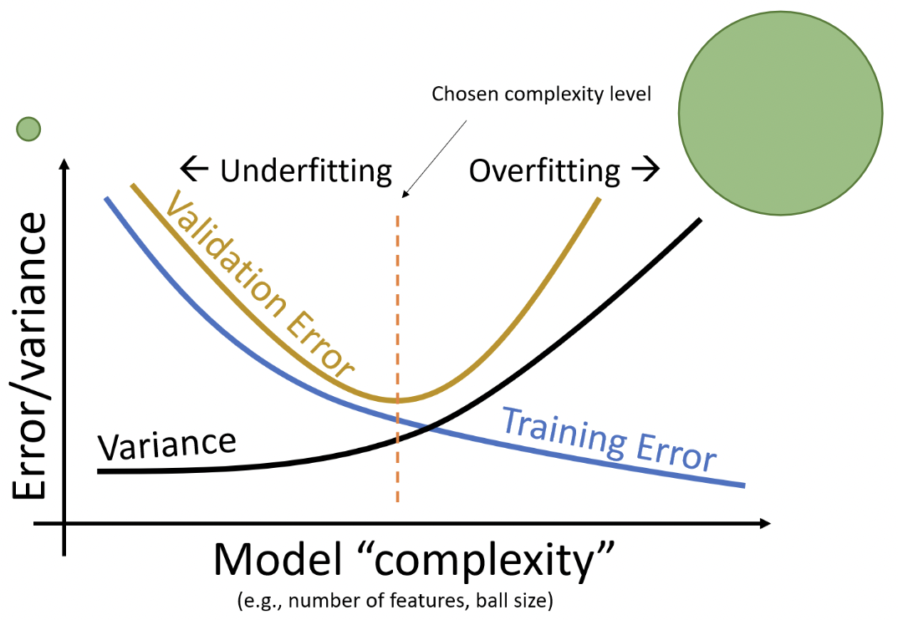
The intercept coefficient is typically not constrained; \(\theta_0\) can be any value. This way, if all \(\theta_i = 0\) except \(\theta_0\), the resulting model is a constant model (and \(\theta_0\) is the mean of all observations).
15.2.1 L2 Regularization
15.2.1.1 The Constrained Form
Regularization is the formal term that describes the process of limiting a model’s complexity. This is done by constraining the solution of a cost function, much like how we constrained the set of permissible (\(\theta_1\), \(\theta_2\)) above. L2 Regularization, commonly referred to as Ridge Regression, is the technique of constraining our model’s parameters to lie within a ball around the origin. Formally, it is defined as
\[\min_{\theta} \frac{1}{n} || Y - X\theta ||\]
The mathematical definition of complexity in Ridge Regression is \(\sum_{j=1}^{d} \theta_j^{2} \le Q\). This formulation of complexity limits the total squared magnitude of the coefficients to some constant \(Q\). In two dimensional space, this is \(\theta_{1}^{2} + \theta_{2}^{2} \le Q\). You’ll recognize this as the equation of a circle with axes \(\theta_{1}, \theta_{2}\) and radius \(Q\). In higher dimensions, this circle becomes a hypersphere and is conventionally referred to as the L2 norm ball. Decreasing \(Q\) shrinks the norm ball, and limits the complexity of the model (discussed in the previous section). Likewise, expanding the norm ball increases the allowable model complexity.
Without the constraint \(\sum_{j=1}^{d} \theta_j^{2} \le Q\), the optimal solution is \(\hat{\theta} = \hat\theta_{No Reg.}\). With an appropriate value of \(Q\) applied to the constraint, the solution \(\hat{\theta} = \hat\theta_{Reg.}\) is sub-optimal on the training data but generalizes better to new data.
15.2.1.2 The Functional Form
Unfortunately, the function above requires some work. It’s not easy to mathematically optimize over a constraint. Instead, in most machine learning text, you’ll see a different formulation of Ridge Regression.
\[\min_{\theta} \frac{1}{n} || Y - X\theta || + \alpha \sum_{j=1}^{d} \theta_j^{2}\]
These two equations are equivalent by Lagrangian Duality (not in scope).
Notice that we’ve replaced the constraint with a second term in our cost function. We’re now minimizing a function with a regularization term that penalizes large coefficients. The \(\alpha\) factor controls the degree of regularization. In fact, \(\alpha \approx \frac{1}{Q}\).
To understand why, let’s consider these 2 extreme examples:
Assume \(\alpha \rightarrow \infty\). Then, \(\alpha \sum_{j=1}^{d} \theta_j^{2}\) dominates the cost function. To minimize this term, we set \(\theta_j = 0\) for all \(j \ge 1\). This is a very constrained model that is mathematically equivalent to the constant model. Earlier, we explained the constant model also arises when the L2 norm ball radius \(Q \rightarrow 0\).
Assume \(\alpha \rightarrow 0\). Then, \(\alpha \sum_{j=1}^{d} \theta_j^{2}\) is infinitely small. Minimizing the cost function is equivalent to \(\min_{\theta} \frac{1}{n} || Y - X\theta ||\). This is just OLS, and the optimal solution is the global minimum \(\hat{\theta} = \hat\theta_{No Reg.}\). We showed that the global optimum is achieved when the L2 norm ball radius \(Q \rightarrow \infty\).
15.2.1.3 Closed Form Solution
An additional benefit to Ridge Regression is that it has a closed form solution.
\[\hat\theta_{ridge} = (X^TX + n\alpha I)^{-1}X^TY\]
This solution exists even if there is linear dependence in the columns of the data matrix. We will not derive this result in Data 100, as it involves a fair bit of matrix calculus.
15.2.1.4 Implementation of Ridge Regression
Of course, sklearn has a built-in implementation of Ridge Regression. Simply import the Ridge class of the sklearn.linear_model library.
We will various Ridge Regression models on the familiar vehicles DataFrame from last lecture. This will help solidfy some of the theoretical concepts discussed earlier.
Code
import pandas as pd
vehicles = pd.read_csv("data/vehicle_data.csv", index_col=0)
vehicles_mpg = pd.read_csv("data/vehicle_mpg.csv", index_col=0)vehicles.head(5)| cylinders | displacement | horsepower | weight | acceleration | cylinders^2 | displacement^2 | horsepower^2 | weight^2 | acceleration^2 | |
|---|---|---|---|---|---|---|---|---|---|---|
| 0 | 8 | 307.0 | 130.0 | 3504 | 12.0 | 64 | 94249.0 | 16900.0 | 12278016 | 144.00 |
| 1 | 8 | 350.0 | 165.0 | 3693 | 11.5 | 64 | 122500.0 | 27225.0 | 13638249 | 132.25 |
| 2 | 8 | 318.0 | 150.0 | 3436 | 11.0 | 64 | 101124.0 | 22500.0 | 11806096 | 121.00 |
| 3 | 8 | 304.0 | 150.0 | 3433 | 12.0 | 64 | 92416.0 | 22500.0 | 11785489 | 144.00 |
| 4 | 8 | 302.0 | 140.0 | 3449 | 10.5 | 64 | 91204.0 | 19600.0 | 11895601 | 110.25 |
Here, we fit an extremeley regularized model without an intercept. Note the small coefficient values.
ridge_model_large_reg = Ridge(alpha = 10000)
ridge_model_large_reg.fit(vehicles, vehicles_mpg)
ridge_model_large_reg.coef_array([[ 8.56292915e-04, -5.92399474e-02, -9.81013894e-02,
-9.66985253e-03, -5.08353226e-03, 1.49576895e-02,
1.04959034e-04, 1.14786826e-04, 9.07086742e-07,
-4.60397349e-04]])Note how Ridge Regression effectively spreads a small weight across many features.
When we apply very little regularization, our coefficients increase in size. Notice how they are identical to the coefficients retrieved from the LinearRegression model. This indicates the radius \(Q\) of the L2 norm ball is massive and encompasses the unregularized optimal solution. Once again, we see that \(\alpha\) and \(Q\) are inversely related.
ridge_model_small_reg = Ridge(alpha = 10**-5)
ridge_model_small_reg.fit(vehicles, vehicles_mpg)
ridge_model_small_reg.coef_array([[-8.06754383e-01, -6.32025048e-02, -2.92851012e-01,
-3.41032156e-03, -1.43877512e+00, 1.25829303e-01,
7.72841216e-05, 6.99398090e-04, 3.11031744e-07,
3.16084838e-02]])from sklearn.linear_model import LinearRegression
linear_model = LinearRegression()
linear_model.fit(vehicles, vehicles_mpg)
linear_model.coef_array([[-8.06756280e-01, -6.32024872e-02, -2.92851021e-01,
-3.41032211e-03, -1.43877559e+00, 1.25829450e-01,
7.72840884e-05, 6.99398114e-04, 3.11031832e-07,
3.16084973e-02]])15.2.2 Scaling Data for Regularization
One issue with our approach is that our features are on vastly different scales. For example, weight^2 is in the millions, while the number of cylinders are under 10. Intuitively, the coefficient value for weight^2 must be very small to offset the large magnitude of the feature. On the other hand, the coefficient of the cylinders feature is likely quite large in comparison. We see these claims are true in the LinearRegression model above.
However, a problem arises in Ridge Regression. If we constrain our coefficients to a small region around the origin, we are unfairly restricting larger coefficients – like that of the cylinders feature. A smaller coefficient – that of the weight^2 feature – likely lies within this region, so the value changes very little. Compare the coefficients of the regularized and unregularized Ridge models above, and you’ll see this is true.
Therefore, it’s imperative to standardize your data. We can do so using z-scores.
\[z_k = \frac{x_k - u_k}{\sigma_k}\]
You’ll do this on lab 8 using the “StandardScaler” transformer. The resulting model coefficients will be all on the same scale.
15.2.3 L1 Regularization
L1 Regularization, commonly referred to as Lasso Regression, is an alternate regularization technique that limits the sum of absolute \(\theta_i\) coefficients.
15.2.3.1 The Constrained Form
\[\min_{\theta} \frac{1}{n} || Y - X\theta ||\]
In two dimensions, our constraint equation is \(|\theta_1| + |\theta_2| \le Q\). This is the graph of a diamond centered on the origin with endpoints \(Q\) units away on each axis.
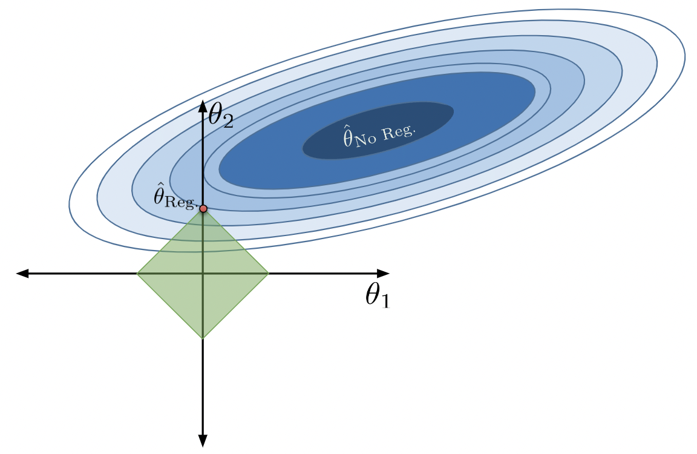
15.2.3.2 The Functional Form
A more convenient way to express Lasso Regression is as follows:
\[\min_{\theta} \frac{1}{n} || Y - X\theta || + \alpha \sum_{j=1}^{d} |\theta_j|\]
As with Ridge Regression, the hyperparameter \(\alpha\) has the same effect on Lasso Regression. That is, increasing \(\alpha\) (equivalently, decreasing \(Q\)) increases the amount of regularization, and vice versa.
Unfortunately, Lasso Regression does not have a closed form solution – the cost function is not differentiable everywhere. Specifically, the sum \(\sum_{j=1}^{d} |\theta_j|\) is problematic because it is composed of absolute value functions, each of which are non-differentiable at the origin.
So why use Lasso Regression? As we’ll see shortly, it is great at implicit feature selection.
15.2.3.3 Implementation of Lasso Regression
Lasso Regression is great at reducing complexity by eliminating the least important features in a model. It does so by setting their respective feature weights to \(0\). See the following example.
from sklearn.linear_model import Lasso
lasso_model = Lasso(alpha = 1)
standardized_vehicles=(vehicles-vehicles.mean())/vehicles.std()
lasso_model.fit(standardized_vehicles, vehicles_mpg)
lasso_model.coef_array([-0.14009981, -0.28452369, -1.14351999, -4.11329618, 0. ,
-0. , -0. , -0. , -0. , 0. ])Notice how we standardized our data first. Lasso Regression then set the coefficients of our squared features to \(0\) – presumably, these are the least important predictors of mpg.
15.2.4 Summary of Regularization Methods
A summary of our regression models is shwon below:
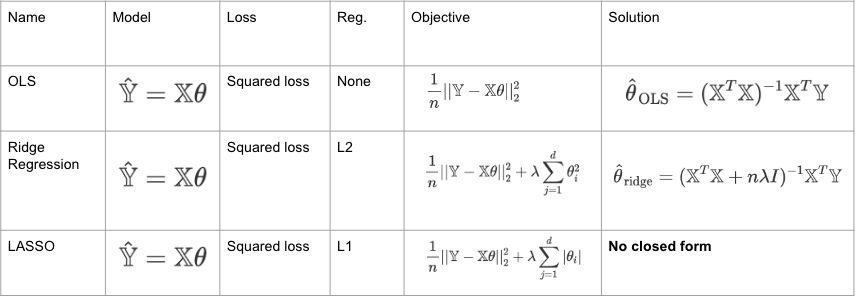
Understanding the distinction between Ridge Regression and Lasso Regression is important. We’ve provided a helpful visual that summarizes the key differences.

This diagram displays the L1 and L2 constrained solution for various orientations of the OLS loss surface. Notice how the L1 (Lasso) solution almost always lies on some axis, or edge of the diamond. Graphically, this makes sense; the edges of the diamond are the farthest from the origin, and usually closest to the global optimum. When this happens, only one feature has a non-zero coefficient; this “feature selection” argument extends quite nicely to multiple features in higher dimensional space.
The L2 (Ridge) solution, however, typically has an optimal solution in some quadrant of the graph. Every point on the circumference of the L2 norm ball is equidistant from the origin, and thus similar in distance to the global optimum. As such, this technique of regularization is great at distributing a small weight across both features.